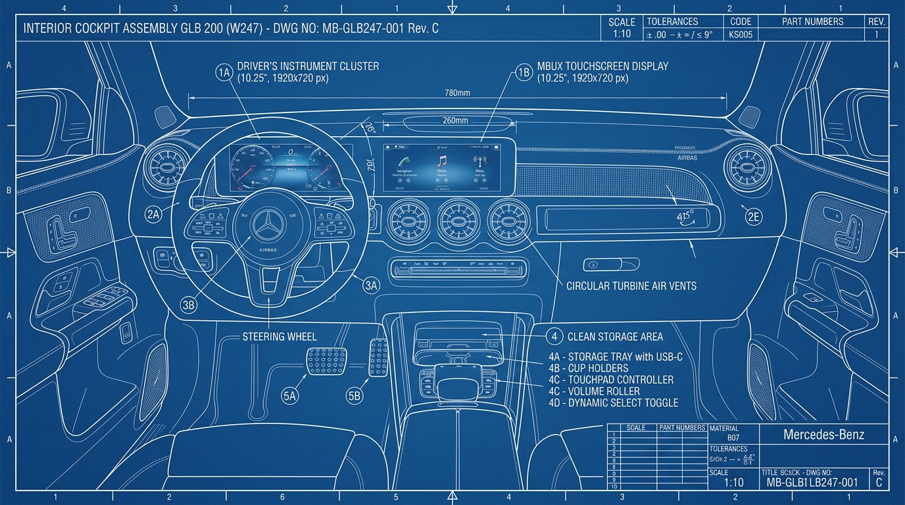
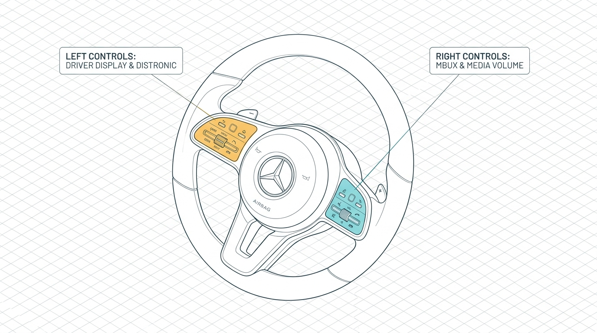
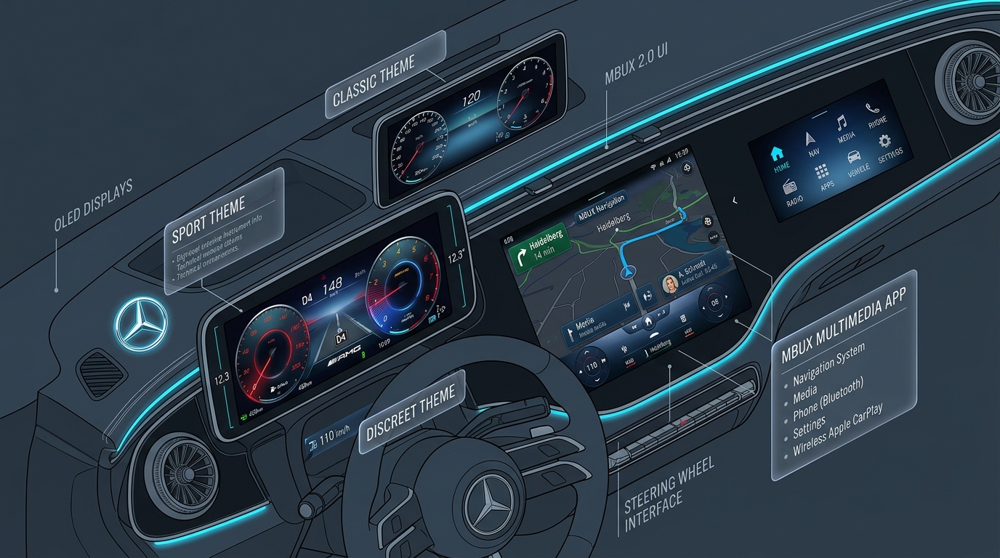
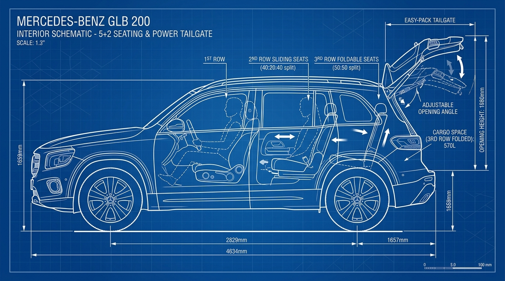

數位儀表與車載系統處於離線狀態
請點擊左下角「ENGINE START/STOP」按鈕發動車輛啟動系統
歡迎您加入 Mercedes-Benz 車主的行列。2024 年式小改款 GLB 200 (W247) 在外觀、駕駛質感與車載科技上皆帶來全面革新。
小改款核心技術規格
| 項目 | 規格數據 |
|---|---|
| 動力單元 | 1,332 cc 直列四缸渦輪增壓引擎 |
| 油電系統 | 48V 輕油電 (EQ Boost / 額外動力 +14 hp) |
| 最大輸出 | 163 hp / 5500 rpm (扭力 27.5 kgm) |
| 變速系統 | DCT 雙離合器 7 速自手排變速箱 |
| 座椅配置 | 5 + 2 彈性七人座空間規劃 |
MBUX 2.0 系統
捨棄觸控板，升級更直覺的無線 Apple CarPlay 與高畫質主題切換。
48V 節能科技
具備滑行熄火與能量回收，兼顧市區行駛油耗與平順怠速運轉。

1.1 儀表與中控雙螢幕佈局
小改款車室取消了舊款鞍座的軌跡觸控板，騰出的空間轉化為精緻的置物盒、防塵拉簾杯架及手機無線充電板。
1.2 雙肋式多功能方向盤
方向盤按鍵採用全新「電容感應」感壓式按鍵，手指輕滑 or 按壓即可快速操作：
方向盤左右肋條中央的黑色小方塊（Touch Control）是光學感應板。操作時只需用拇指指腹在其上滑動，即可像遙控器一樣移動螢幕光標，按下即代表「確認」。
1.3 按鍵功能對稱劃分
左側按鍵群： 主要負責數位儀表的樣式切換（Classic 經典、Sport 運動、Discreet 簡約）與行車資訊查閱，並整合了 Level 2 跟車系統控制。
右側按鍵群： 主要負責 MBUX 2.0 多媒體娛樂主機、藍牙電話接聽與 volume 音量滑動調節。

2.1 排檔操作指南
賓士車主必須習慣的 **DIRECT SELECT 懷檔**，位於轉向柱右側。以下是正確起步與排檔的步驟：
-
1
打入 D 檔 (前進)
踩住煞車踏板，將懷檔撥桿往**下**壓到底，儀表板將顯示 D1。
-
2
打入 R 檔 (倒車)
踩住煞車踏板，將懷檔撥桿往**上**撥到底，中控螢幕將自動啟動倒車顯影或 360 環景。
-
3
排入 P 檔 (停車)
當車輛安全停穩後，直接按下撥桿最外側端點的 **「P」按鈕**。系統會自動扣上電子手煞車。
右側撥桿是排檔專用，因此所有的方向燈撥桿、大燈超車閃爍及雨刷速度轉鈕，都整合在**左側後方**的單一撥桿中。
3.1 DISTRONIC 智慧跟車操作
小改款升級進階輔助駕駛，操作由方向盤左側肋條按鍵直接控制：
-
A
啟動系統
按壓方向盤左側 **SET+** 或 **SET-** 鍵即可啟動定速跟車。按壓 **RES** 恢復前次設定速度。
-
B
調整與前車車距
在左側的車距滑動條（橫式條狀按鈕）上輕觸滑動。往右滑增加車距，往左滑縮短車距。
-
C
手放開提示 (電容方向盤)
當主動轉向輔助圖示（綠色方向盤）亮起，車輛會自動行駛於車道中央。手輕放外圈感應即可解除手離警告。
3.2 自動停車輔助 (Active Parking Assist)
在時速 35 km/h 以下行駛，中控螢幕亮起 「P」 圖示即可按下停車快捷鍵，選取格位放開煞車，系統會自動控制方向、檔位與煞車完成停車。
4.1 無線 Apple CarPlay / Android Auto 連結步驟
2024 年式小改款 GLB 200 原廠標準配備 **無線智慧型手機整合系統**：
- 開啟手機的 藍牙 (Bluetooth) 與 Wi-Fi 功能。
- 在中控螢幕主選單選擇 「電話」 或 「智慧型手機」 項目。
- 點擊 「連接新裝置」，尋找您的手機藍牙名稱並點擊配對。
- 於手機端點選允許配對，並選擇 「使用 CarPlay / 啟用 Android Auto」。
- 以後每次上車，不需接線，系統即可自動無縫啟動鏡射畫面。
4.2 氛圍燈與儀表板主題風格切換
MBUX 2.0 提供三款數位儀表顯示主題，完美融入賓士經典的 64 色氛圍燈系統：
Classic 經典： 雙圓指針錶盤，中間顯示輔助行車或導航地圖資訊。
Sport 運動： 紅色跑車指針搭配中央單圓錶，顯示動態輸出與增壓值。
Discreet 簡約： 將視覺資訊簡化至極致，大幅減少夜間長途駕駛產生的眼部疲勞。

5.1 5+2 七人座空間變化說明
GLB 200 在緊湊的車身結構下提供了 5+2 七人座配置。座椅可以進行豐富的收折滑動：
| 座椅排數 | 調整功能 |
|---|---|
| 第一排駕駛與副駕 | 配備多向電動調整與記憶功能。 |
| 第二排座椅 (40:20:40) | 支援前後滑移 14 公分，椅背角度可調，並具備 Easy-Entry 第三排快速進出拉繩。 |
| 第三排隱藏座椅 (50:50) | 可平整收折於行李箱底板下方。配備杯架及 Type-C 充電孔。 |
5.2 尾門開啟高度限制 (機械車位防碰撞)
如果您經常停放機械車位或限高停車場，務必設定尾門限制高度：
設定步驟： 手動拉動或遙控開啟尾門至想要的位置（高度至少需高於半開狀態），隨後長按尾門飾板內側的紅色「關閉按鈕」約 3 秒。車尾發出「嗶嗶」兩聲，即鎖定此開啟高度。再次手動推至頂端長按 3 秒即可取消限制。

尾門高度限制設定
有效避免尾門向上開啟時撞擊低矮天花板、灑水管線或機械車位支架。
- 發動或插上鑰匙，開啟後尾門。
- 當尾門上升至合適高度時，用手將其扶住，或手動拉至所需的高度限制位置。
- 持續按壓後尾門飾板上的紅色「關閉按鈕」持續約 3 秒。
- 聽到車尾揚聲器發出「嗶嗶」兩聲，代表目前高度已成功設定為最高開啟位置。
- 若要恢復全開狀態，手動將尾門推到最頂端，再次長按關閉按鈕 3 秒直至提示音響起即可。
車外鑰匙一鍵起閉車窗與天窗
在炎熱的夏天，您可以在走向愛車時預先降下所有車窗進行散熱；下車發現天窗忘記關時，也不需要重新上車啟動電源。
- 一鍵開啟： 按住遙控器上的「解鎖（開鎖）按鈕」不放，所有車窗與天窗將會同時降下與開啟。直到您放開按鈕為止。
- 一鍵關閉： 離車時，按住遙控器上的「上鎖按鈕」不放，所有已開啟的車窗與天窗將自動完全升起與關閉，免除重新上車的繁瑣。
駕駛座便利進出功能 (Easy-Entry / Exit)
在您開門下車或發動起步時，方向盤與座椅會自動退開及復位，讓上下車動作優雅無壓。
- 啟動中控 MBUX 螢幕，進入首頁的 「設定」 選單。
- 選擇 「車輛」 頁面，隨後點選 「便利進出功能」 (Easy-Entry/Exit)。
- 勾選啟用該功能。
- 運作效果： 熄火開門時，方向盤會自動升至最高處以騰出大腿空間；若座椅位置偏前，座椅會往後退。當再次上車按下 Start 按鈕，座椅和方向盤會自動回覆至記憶之駕駛姿勢。
外部照明延遲熄滅設定
在深夜沒有路燈的停車場，讓車輛大燈充當您的手電筒，在您離車後持續照明安全道路。
- 開啟 MBUX 中控螢幕，選擇 「設定」 → 「燈光」。
- 找到 「外部照明延遲熄滅」 (Exterior light delay)。
- 您可以自訂點亮時間，例如選擇：15 秒、30 秒、60 秒 或關閉。
- 設定完成後，鎖車時大燈及迎賓燈將保持亮起，達到設定時間後自動熄滅。
單門 / 全車門解鎖模式快速切換
預設按壓鑰匙解鎖會開啟全車四門。如果您經常單獨開車，可設定為僅解鎖駕駛座，防止歹徒從其他車門乘隙潛入。
- 拿出車鑰匙。
- 同時**按住遙控鑰匙上的「上鎖鍵」與「解鎖鍵」不放，持續大約 5 秒**。
- 指示燈閃爍兩次代表切換成功。
- 切換後效果： 按一下解鎖鍵，僅解鎖駕駛座門與油箱蓋；連續按兩下解鎖鍵，才會解鎖全車車門。重複相同長按步驟可切換回全車解鎖。
7.1 胎壓監測警示重設 (TPMS Reset)
當儀表板亮起胎壓警告，請將輪胎氣壓補充至油箱蓋內側標示的標準胎壓，隨後進行手動重設歸零：
- 點按啟動按鈕（不踩煞車）開啟儀表電源。
- 使用方向盤左側 Touch Control 滑動，切換儀表板至 「保養 (Service)」 選單。
- 選取並點入 「輪胎 (Tyres)」 選項。
- 向下滑動 Touch Control，會彈出 「是否將當前壓力儲存為新參考值？」 的提示。
- 按下確認鍵點選「是」，行駛數公里後即可完成新胎壓基準監控設定。
7.2 遙控器沒電！如何緊急發動引擎
當鑰匙電池過低，儀表顯示「未偵測到鑰匙」時，請執行以下步驟緊急發動車輛：
-
1
在中控鞍座水杯架前部，尋找印有 「鑰匙與訊號發射器 🔑」 圖案的實體凹槽。
-
2
將沒電的遙控鑰匙整支平放在該感應凹槽內，讓車載晶片讀取物理訊號。
-
3
踏緊煞車踏板，再次按下 Engine Start/Stop 按鈕。車輛即可順利發動。
KEYLESS EMERGENCY ZONE
請將沒電的鑰匙放置於中央杯架凹槽發射器感應區上